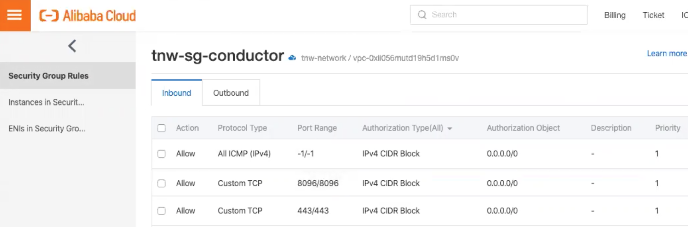
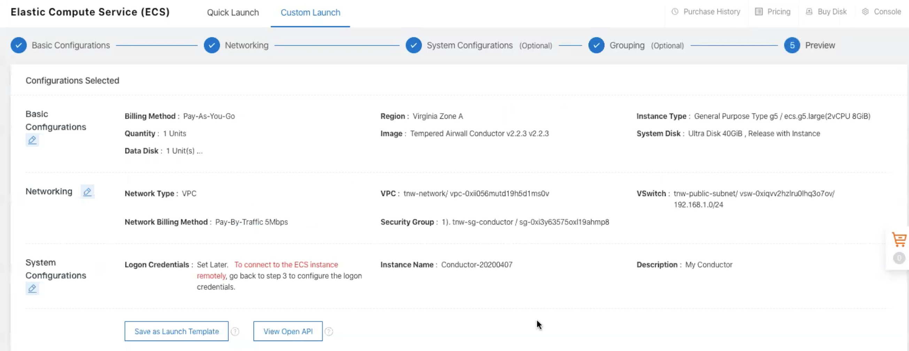

Deploy a Conductor on Alibaba Cloud
You can deploy an Airwall Conductor on Alibaba Cloud to manage physical, virtual, and cloud Airwall Edge Services, and Airwall Agents. Use the following steps to deploy a Conductor on Alibaba Cloud.
- Supported Versions
- Conductor 2.2.8 and later
 at the top right of this topic to print or create a PDF.
at the top right of this topic to print or create a PDF.Before you Begin
- Access to an Alibaba Cloud account. If you do not have an account, you can create one here.
- Billing information set up for your Alibaba Cloud account.
- A Conductor license voucher. You need to purchase a voucher to license and log in to your Conductor once you’ve deployed it on Alibaba Cloud.
Step 1: Set up a Security Group
Before you start setting up the Conductor, you need to set up a Security Group and Networks in Alibaba Cloud for the Conductor.
- Follow the instructions on Alibaba Cloud to log in to your account.
- In Alibaba Cloud, on the Elastic Compute Service side menu, go to Networks and Security, then Security Groups.
-
Create a new Security Group for your Conductor,
and set up the following Inbound Security Group
Rules:
- Allow ICMP IPv4 access. This allows the Conductor to check network communication and reachability (for example, ping).
- Allow TCP on port 8096. This is the port the Conductor uses to communicate.
- Allow TCP on 443/443. This opens up https:// for the Conductor's web interface and API calls.

Step 2: Set up Networks
- In Alibaba Cloud, on the Elastic Compute Service side menu, go to Networks and Security, then VPCs.
- Create a VPC for your Conductor.
-
Set up 2 subnets in that network, and select the datacenter and zone for them
(these need to be the same as you choose for the Conductor in
the next step):
- public_network
- private_network
Step 3: Set up a Conductor in Alibaba Cloud
- Search for Tempered Airwall Conductor in the Alibaba Cloud marketplace.
- Select Choose Your Plan.
- Select your Billing method and Region. Make sure you choose the same datacenter and zone as the subnets you set up earlier.
- For Instance Type, select ecs.g5.large.
- For Image, leave it on the default Marketplace image.
-
Under Storage, set:
- System Disk - Set to Ultra Disk with the minimum storage of 40 GiB.
- Data Disk – Add a second Enhanced SSD drive with 120 GiB for the database and log files.
- Select Next: Networking at the bottom to continue.
-
Under Network Type:
- Type - Choose VPC.
- Select a VPC - Select the VPC network you set up earlier
- Select a VSwitch – Select the public_network subnet you set up earlier.
- Under Public IP Address, check the Assign Public IP Address box.
- Under Bandwidth Billing, select Pay by Traffic.
- Under Security Group, select the security group you created earlier.
- Leave the rest of the settings as the default, and select Next: System Configurations.
- For Logon Credentials, select Set Later.
-
For Instance Name, set to
Conductor-<date>. For example,Conductor-20200501. - (Optional) Fill in the Description, and set a Hostname if you have it set up.
- Select Next: Grouping, then Next: Preview. (You do not need to set any Grouping settings.)
-
On the Preview page, check your settings, check to
accept the terms of service, and then select Create
Instance.
You get a confirmation that your instance has been created.
- Click Console to go to your Conductor instance page, where you can see the status of the instance being created. Under IP address, note the IP of your Conductor.
Step 4: (Optional) Assign a permanent IP to your Conductor
Verify, Configure, Provision, and License a Cloud Conductor
It may take several minutes for the Conductor to become available after it starts, so if you attempt to access it and your browser appears to stop responding, please try again in a few minutes.
- Alibaba Cloud – Tnw-<instanceID>
- Amazon Web Services – Tnw-<instanceID>
- Microsoft Azure – Tnw-<privateIpOfPublicNic>
- Google Cloud – Tnw-<instanceID>
Conductor v2.2.8 and earlier – Set Conductor System Time
After you've finished provisioning and licensing your v2.2.8 or earlier Alibaba Cloud Conductor, you may need to change the system time, as the default time zone may be out of sync with your current time. In v2.2.10 and later, you are prompted to set the system time during initial configuration.
- In your Conductor, go to Settings.
- Under System time, select Edit Settings.
- Select Set browser time, and then select Update.
You can also enable NTP servers to set the system time. See Set the Conductor system time.